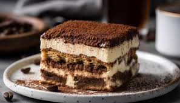
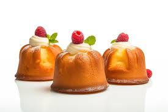
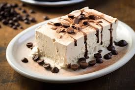
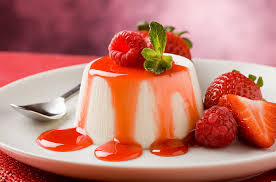

Tiramisu
An Italian dessert made with mascarpone, ladyfingers, and coffee.
Ingredients
- Mascarpone cheese: 500 g
- Ladyfingers: 200 g
- Coffee: 150 ml
- Eggs: 4
- Sugar: 100 g
- Parmesan: 50 g (optional)
Instructions
- Beat the eggs and sugar, add mascarpone cheese, and mix.
- Place the coffee in a bowl, dip the ladyfingers, and layer them in a tray.
- Pour the mascarpone mixture over the ladyfingers.
- Sprinkle with cocoa powder, chill, and serve.
Cassata Siciliana

A Sicilian dessert made with ricotta cheese, sugar, and sponge cake.
Ingredients
- Ricotta cheese: 500 g
- Sugar: 200 g
- Sponge cake: 300 g
- Sugar syrup: 100 ml
- Gum arabic: 5 g
Instructions
- Mix ricotta cheese and sugar.
- Dip the sponge cake in sugar syrup and layer it in a mold.
- Pour the ricotta mixture over it, chill in the fridge.
- Before serving, sprinkle with gum arabic.
Zabaglione

A light dessert made with egg yolks, sugar, and Marsala wine.
Ingredients
- Egg yolks: 6
- Sugar: 100 g
- Marsala wine: 150 ml
Instructions
- Beat the egg yolks with sugar.
- Add the wine and heat the mixture in a double boiler.
- Once thickened, remove from heat and cool.
- Pour the cooled dessert into glasses and chill.
Crostata

A traditional dessert made with fruit jam.
Ingredients
- Flour: 300 g
- Sugar: 150 g
- Eggs: 2
- Butter: 150 g
- Fruit jam: 200 g
Instructions
- Mix flour, sugar, eggs, and butter to make a dough.
- Roll out the dough, place it in a tart pan, and spread jam on top.
- Bake at 180°C for 25-30 minutes.
- Once cooled, slice and serve.
Ricotta Cheesecake
A classic cheesecake recipe made with ricotta cheese.
Ingredients
- Ricotta cheese: 500 g
- Cream cheese: 200 g
- Eggs: 3
- Sugar: 150 g
- Vanilla: 1 packet
- Biscuits: 200 g
- Butter: 100 g
Instructions
- Crush the biscuits, add melted butter, and press into the base.
- Mix ricotta, cream cheese, eggs, sugar, and vanilla, then pour over the base.
- Bake at 180°C for 40-45 minutes and let cool.
- Once cooled, slice and serve.
Tartufo

A frozen dessert made with chocolate and ice cream.
Ingredients
- Vanilla ice cream: 500 g
- Chocolate: 200 g
- Hazelnuts: 50 g
Instructions
- Shape the ice cream into balls.
- Melt the chocolate and dip the ice cream balls into it.
- Sprinkle hazelnuts on top and freeze.
- Serve when chilled.
Baba au Rhum
A pastry soaked in rum syrup.
Ingredients
- Flour: 300 g
- Eggs: 4
- Milk: 100 ml
- Sugar: 100 g
- Rum: 100 ml
- Jasmine syrup: 150 ml
Instructions
- Mix flour and eggs, add yeast, and knead the dough.
- Let the dough rise and bake it in the oven.
- Soak the baked dough in rum syrup and let cool.
- Pour additional syrup on top and serve.
Semifreddo
A semi-frozen dessert served with chocolate or fruit.
Ingredients
- Eggs: 3
- Sugar: 150 g
- Chocolate: 100 g
- Whipped cream: 200 ml
Instructions
- Beat the eggs and sugar, melt the chocolate.
- Add the chocolate mixture and mix with whipped cream.
- Pour into a container, chill in the fridge for 3-4 hours.
- Once chilled, slice and serve.
Panna Cotta
A creamy, light, and refreshing Italian dessert.
Ingredients
- Heavy cream: 500 ml
- Milk: 100 ml
- Sugar: 100 g
- Gelatin: 1 packet
Instructions
- Mix heavy cream and milk, and heat.
- Add sugar and stir, then add gelatin and dissolve by stirring.
- Pour the mixture into molds and chill in the fridge for 4 hours.
- Once chilled, slice and serve.